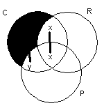

|
1. Some cats are pets and some pets have fleas. Do some cats have
fleas? Can't tell. |
|
|
2. Not all Americans are rich. Rich Americans do not drive Yugos.
Do some Americans drive Yugos? Can't tell. |
|
|
3. Some cars are reliable and some aren't. Unreliable cars have
poor warranties. Do all cars have poor warranties? Yes. |
 |
|
4. Only movie stars drive Maseratis. Everyone who drives a
Maserati is a snob. Joe isn't a snob. Is Joe a movie star? Can't tell. |
|
|
5. Some Baptist preachers eat chicken. Reverend Sims is a preacher
and he eats chicken. Is Reverend Sims a Baptist? Can't tell. |
|
|
6. John and Mary are both philosophy students, but only Mary is
taking logic. Only logic students understand Venn diagrams, and
even some logic students don't understand them. Does John
understand Venn diagrams? No. |
|
|
7. Only women may join. Humphrey is not a woman. Everyone in the
car-pool has joined. Is Humphrey in the car-pool? No. |
|
|
8. All mutts chase cars. Odie is a dog but he is not a mutt. Does
Odie chase cars? Can't tell. |
| Go to : | venn diagraming | previous exercises | class materials |
| Send comments to | Dr. Nute |
dnute@ai.uga.edu |
the AI Center |
| produced for the | Philosophy | department | at UGA. |